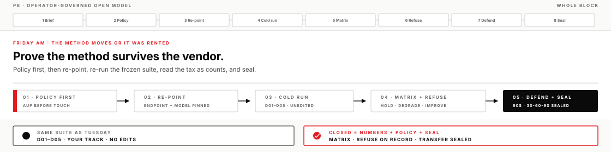
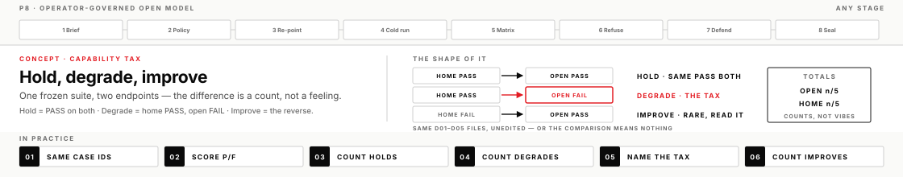
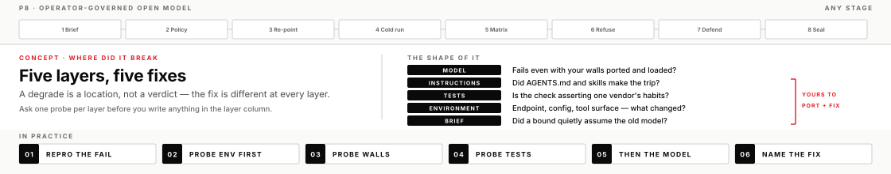

Everything the week built gets moved to a brain nobody sold you: policy written before the first request, the frozen suite re-run as numbers, the 30-60-90 sealed. If the method survives the move, it was never a rental.
DayFriday AM
BlockP8
Time~3–3.5 hr (half-day close)
ToolsCodex app (re-pointed) · hosted open model · instruments/p8_hold_degrade
Your progress0 / 23 · 0%
The day the vendor changes
All week, every model behind your harnesses came from a commercial vendor, with that vendor's acceptable-use machinery standing between you and the raw engine. At work that arrangement is temporary by nature: models get deprecated mid-quarter, prices move, procurement changes vendors, a policy shop bans an endpoint overnight. When that day comes, the only question that matters is whether your craft was a method or a product habit.
Today you are handed a hosted open model — an endpoint where no vendor's guardrails stand between you and the model, so the governance is yours to author or it does not exist. You write the policy before the first request, re-run the same five fixed cases you scored on Tuesday — D01–D05, unedited — read the difference as counts, refuse one legitimate task under your own rules, and seal the plan that carries all of it to your desk.
What you will leave with
An endpoint AUP (acceptable-use policy) with a version and a date that precede your first request — a policy you can reuse the next time a new model shows up at work
A hold/degrade matrix on D01–D05, home vs open, as counts — every non-hold labeled with a failure layer
A refusal on the record: one legitimate task your own policy blocked, with the reason, beside a control task that ran
A 90-second defense you can deliver from evidence alone, and a listener who heard it and could say back which work this endpoint is fit for — no slides, no story
Your 30-60-90 SEALED, with a session log proving it grew all week
You can treat a model swap as a measurement exercise instead of a leap of faith
Before you start
Your P2 score sheet with the after column filled — that is the home baseline (if it's missing, you'll run home once this morning first)
Operator templates in your Codex app project: DIRECTION_BRIEF.md, OPERATOR_LOG.md
mission_flesh/p8/AUP_ENDPOINT_TEMPLATE.md located and readable
The endpoint pin — endpoint, model name, and key. The lead posts it at the start of the block, on the room screen or handed to you directly; it never ships in the pack, whose mission_flesh/p8/ folder carries a placeholder endpoint only, so if you don't have it, ask. mission_flesh/p8/REPOINT_RUNBOOK.md lets you stage the whole re-point before the pin lands
operator/TRANSFER_30_60_90.md with its session-log rows from the week
Lead operate-along
The lead runs this same page on screen — policy drafted live, the cold run scored in a build chat you can see, degrades attributed out loud, the seal run adversarially. You still run your own chair: your policy, your matrix, your seal. Check a box when you finish the step, not when you watch it happen.

The craft under the morning
Five pieces of operator craft carry this morning — each one pays off at the stage that leans on it.
Policy before touch
An acceptable-use policy — an AUP — is the written rule set for an endpoint: what may be asked of it, what may not, what data may never leave your laptop on its way there, when a human must approve before results are used, and what gets logged. All week a vendor supplied most of that invisibly. On an operator-governed endpoint, nobody does. The guardrails are yours to author, and an unauthored guardrail is not a guardrail — it's a hope.
The order matters more than the text. A policy written after you've seen the endpoint behave is shaped by what the endpoint did — you end up describing behavior and calling it governance. A policy written before first touch is shaped by your obligations: the data you hold, the people your outputs affect, the failure you can't afford. That's why the AUP carries a version and an effective date, and why the date has to precede your first request. The dated version is also your evidence: anyone auditing the work later can see the rules existed before the behavior they governed.
What going wrong looks like: a policy with an empty Forbidden section, or one so vague it could never refuse anything. Both fail the same way — they cost nothing, so they govern nothing. At work, this discipline is the difference between "we tried the new model" and "we evaluated the new model under a policy I can show you." The second sentence survives an audit; the first one starts one.
The capability tax is a number
Moving off a frontier commercial model usually costs capability. The operator question is never whether there's a tax — it's how much, on which work. You answer that with the frozen suite: the same five case files you scored on Tuesday, unedited, re-run cold on the new endpoint. Each case scores PASS or FAIL against its own checks. A case that passes on both endpoints is a hold. Home PASS turning into open FAIL is a degrade — the tax, made visible. Home FAIL turning into open PASS is an improve, rare and worth reading closely.
The measurement is loop completion, not answer quality. A fluent, confident, beautifully organized answer that misses the case's check is a FAIL; a terse one that hits it is a PASS. That's deliberate: at work you don't ship prose, you ship closed loops, and open models are often better at sounding capable than at closing loops. The frozen part is equally load-bearing — edit a case to be "fairer" to the new model and the comparison stops meaning anything, because you're no longer measuring the same thing twice.

A degrade is a location, not a verdict
When a case degrades, the interesting question is where it broke. Five layers can each kill a case on a new endpoint: the model (the new brain genuinely can't do it), the instructions (your AGENTS.md walls — the standing instructions the harness loads — and your skills never made it onto the re-pointed run), the tests (your check quietly asserts one vendor's formatting habits), the environment (endpoint config, missing tool surface, a path that changed), or the brief (a bound that silently assumed the old model's strengths).
The fix is different at every layer, which is why the label matters. A model-layer failure argues for a partial re-point — keep that workload on the commercial engine. An instructions-layer failure means your craft is portable and you simply haven't ported it yet. A test-layer failure means your suite was never measuring what you thought. The common miss is writing "model" in every row: the new brain gets blamed for a wall that never made the trip. Probe the cheap layers first — environment, then instructions — before you convict the expensive one. At work, this is the skill that turns "the new model is worse" (an argument) into "three of five degrades were harness gaps we can close" (a plan).

The refusal that proves ownership
A policy is only load-bearing when it costs you something you wanted. So you run the cost on purpose: pick a genuinely useful task that your own AUP forbids, ask for it, let the policy say no, and record the refusal with the reason. Then run an allowed control task beside it — proof that the endpoint works and the refusal was governance, not breakage.
The trap is the strawman: refusing a task nobody would ever run proves nothing and feels like compliance theater, because it is. The refusal should sting a little. And when the policy blocks something it shouldn't, the answer is never a quiet exception — it's an amendment, in writing, with a version bump. That's what operating your own governance actually feels like: the rules bind you too, and changing them leaves a trail. At work this is the habit that makes your policy credible to the people who audit it — and to you, six months later, wondering why a rule exists.
The method survives the vendor
What transfers when the vendor changes is not the app — it's the assets: the brief discipline, the frozen tests, the contract language, the logs, and now the policy. The line between what ports and what stays is what the asset names. An asset that names an outcome and a check — the summary must cite its sources, and here is the test that looks — runs against any engine, because outcomes and checks belong to your work, not to a vendor. An asset that names vendor behavior — a skill leaning on one app's tool surface, a test that quietly asserts one model's formatting habits — dies with the vendor, and that second kind is exactly what the matrix's tests layer catches. Every asset on the list above passes the first sort, which is why all of them work this morning on a model you had never touched before today. That's the proof the week was building a capability and not a product habit. Run the same sort on your own harness: any skill or check in it that names a vendor is a porting job waiting to be discovered on a worse day than this one.
Two artifacts carry that proof out the door. The 90-second defense forces you to argue the endpoint decision from evidence alone — matrix totals, policy version, one accept, one reject — the exact shape of every model-choice conversation you'll ever have with a manager. And the sealed 30-60-90 is the method mapped onto your actual desk, grown one session at a time all week. The failure mode here is Friday theater: demo the open model, feel the novelty, call it transfer. Numbers and a seal are the antidote — neither can be faked in an afternoon, and the seal checklist checks for exactly that.
Optional field guide · 60–75 min
Inspect the boundary behind the endpoint
Know the Endpoint Trust Boundary separates request, credential, telemetry, and retention planes, then converts endpoint promises into scoped claims, controls, evidence, owners, and unresolved questions before sensitive work is allowed.
Before you move on
A completed lesson means more than a successful run. Evidence must survive adversarial review — policy dated before touch, numbers on the matrix, a refusal on record, a seal that grew all week. Full list: these P8 lesson outcomes.
If you get stuck
The endpoint won't answer. Check placeholder vs pin values first; a capped or mispasted credential errors in a way that reads like a login failure. Run the allowed control task, then escalate with the exact error text. Meanwhile the block doesn't idle: policy, home column, refuse rationale, and defense prep all proceed without the socket.
No home baseline. If your P2 after column is empty, run D01–D05 once on the home model first this morning, then open — same IDs, no substitutions. Both columns come from today; the comparison still holds.
Everything degraded and it feels like the model's fault. Probe environment before verdict: did your instructions and skills load on the re-pointed run at all? Port the walls, re-run one case, and only then write layer labels. Narrow data scope if time is short — never the judgment standard.